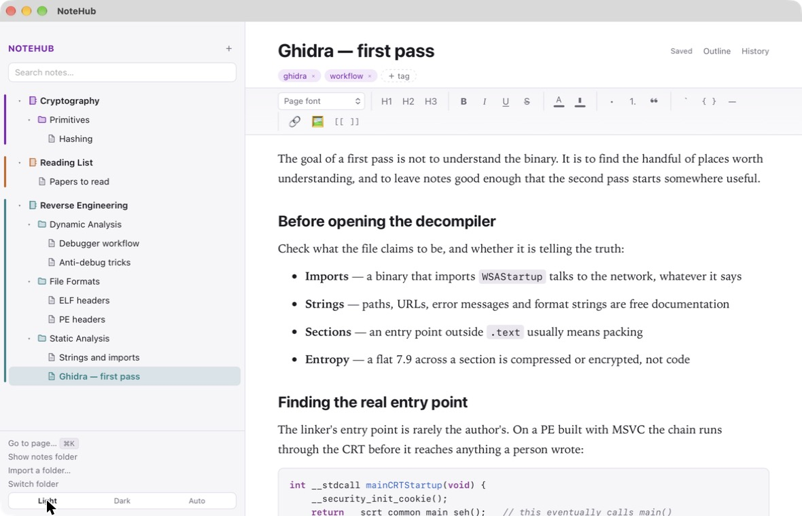
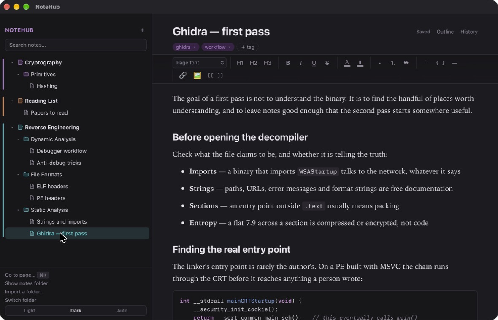

NoteHub keeps everything you write as plain Markdown files in a folder you pick. No account. No ads. No subscription. Nothing between you and your own words.


Note apps have a habit of growing into something else — a subscription, an inbox, a feed, a place your work is held. NoteHub is deliberately none of that.
Nothing to sign up for. Open it and start typing.
Nothing is sold, promoted, or recommended to you.
Free, in full. There is no paid tier holding a feature back.
It makes no network requests. Nothing about you leaves the machine.
Always. There is no server for it to be cut off from.
Your notes are ordinary .md files. Delete the app and they are all still there.
Enough structure for a long study project, and nothing beyond it.
Notebooks hold sections, sections nest as deep as you like, and a page is a document written top to bottom.
Headings, lists, tables, bold and italic, text colour and a highlighter, code blocks with syntax highlighting, images you can resize and wrap text around.
Type [[Another Page]] to link two notes. Every page shows what links back to it.
Full-text search across the whole vault, plus tags and a ⌘K jump-to-page.
Earlier versions are kept on your machine as you work, so a bad edit is never final. Restoring can itself be undone.
Put the folder in iCloud Drive, Dropbox or Syncthing. If a note changes while it is open, your unsaved text is kept beside it rather than overwritten.
Follows the system by default. Notebooks can be coloured so a full shelf reads at a glance.
Import a folder of existing Markdown and it becomes a notebook, nesting and all.
The same vault opens on both. Filenames are chosen so a note written on one never breaks on the other.
NoteHub is not code-signed. Signing costs a yearly fee to Apple and to a Windows certificate authority, and this app is free — so your system will ask once whether you meant to open it. You did.
Right-click NoteHub in Applications and choose Open, then Open again in the dialog. Only needed the first time.
On the blue SmartScreen notice, click More info, then Run anyway. Only needed the first time.
You should not have to take anyone's word for what a note app does with what you write. The source is there to be read, checked and built by anyone who wants to — which is the only honest way to claim an app sends nothing anywhere.